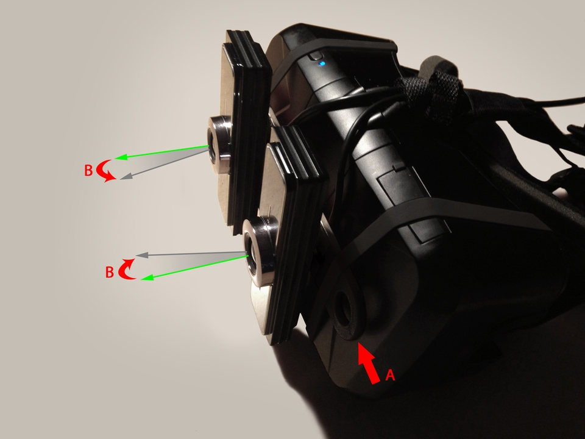
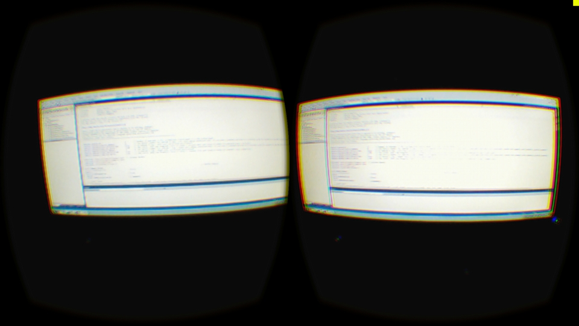
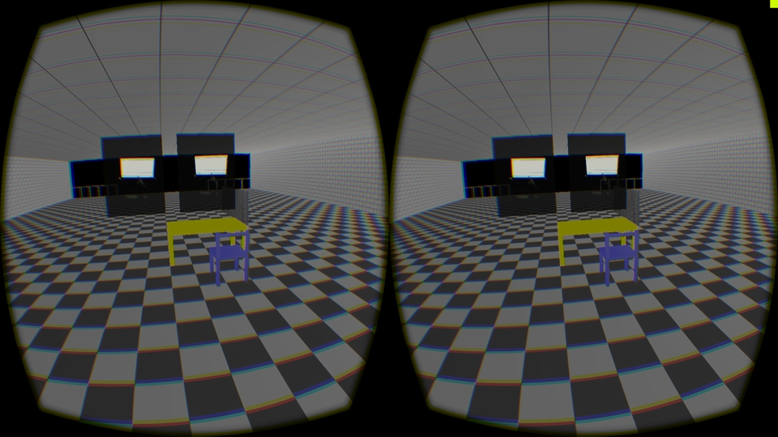

Introduction
The purpose of these examples is to provide a practical guide and an effective starting point regarding the ambitious and real possibilities to extend the way of using the Oculus Rift, gathering together Virtual Reality, Augmented Reality and Gesture Interaction in a unique project.
Virtual Reality (VR) is all about the creation of a virtual world that users can interact with. Users are isolated from the real world while immersed in a full synthetic environment, as far as the immersive experience is achieved by the wearing of a VR helmet (e.g.: Oculus Rift).
On the other hand, Augmented Reality (AR) blends virtual reality contents with the real world. As a result, users can interact with virtual contents while continuing to be in touch with the real life around them. This experience is achieved by the wearing of AR glasses (e.g.: Google Glasses).
VR seems to be more B2C and entertainment oriented (e.g.: Video Games) while AR might have a wider spectrum of use and a more commercial success because it does not completely take users out of the real world. VR HMDs have a worse wearing factor, require more computing power, however they can offer a better immersive surreal experience compared to AR HUDs. By the way, both VR and AR appear to be similar as far as the aim of immersing the user is concerned.
Technically speaking, the main difference between the two systems seems to be a transparency mask issue. VR scenes are completely opaque over the entire display (i.e. you cannot see the real world around you). AR glasses are transparent (you see the real environment) and pixels where virtual contents are drawn have an opacity value in order to overwrite the real world light information. From this point of view, VR is simply a transparency mask limit case of AR, where transparency has a null value over the entire display.
Often it seems that VR and AR are two different worlds that do not overlap. But what if we imagine VR and AR on the same next generation device? Why do not have a unique system that could provide both AR and VR experiences? Well, it is not so simple as it looks like ...
The visionary device would be more similar to AR glasses. It would be wireless, lightweight and with a nice wearing design and charm for walking on the street and being able to see the real world. It would have a wide field of view and an ultra-low latency display to offer a great immersive experience when playing a video game or watching a movie. This next generation mobile device would also have some sensors (e.g.: Depth/ToF camera, microphone, ...) to easily interact with.
Like for mobile devices, next-gen apps would deal with the transparency mask and device buffers, offering a mixed reality experience or completely isolating the user from the real life.
The issue is to completely cover light information coming from the real environment in a specific area of the glasses with the virtual contents and being able to blend the two worlds from 0% up to 100%. If the lenses wouldn't be able to be fully opaque, the sum of the virtual world projected light and the real world light would produce a virtual image ghosting over the real life.
Even if less attractive and still with a lot of issues, an effective and low-cost alternative to start your own VR/AR experience on a same device, would be to add a couple of eyes (camera sensors) to an Oculus Rift in order to look beyond the HMD.
As far as "issues" are concerned, I report the main of them here below, with the purpose to share what I am talking about.
Movement. Even if you have performant webcams (e.g.: 60fps), the FPS still matter. And even if I have split the webcam management from the rest of functionalities, with a multi-threaded approach, in order to avoid lack of performances, while waiting every frame to get information from cameras, you could still note a minimal delay between your movements and the following real-time video, that you wouldn’t have in real life. Moreover, even if you have a 60fps webcam (i.e. a shutter speed of about 1/60), you would still notice the motion blur effect, that you would not in the real life.
Pixels. Even if you have high resolution webcams (with low-res sensors you would worsen with a stretched blocky effect), the central grid of pixels of the Oculus display is still remarkable and this reduces the experience of directly looking the real world. Moreover, you cannot struggle against ISO of your camera sensor. As far as the Rift is a wired device, most of the time you would be in a low-light condition, that implies a high sensibility mde of the sensor and as a result, a lot of noise all over the frame. On top of that, the dynamic range of the webcam is not the same of the eye (about 10-14 f-stops), however this issue seems to be less annoying than the motion blur effect.
Yes, many issues ... but it works!
And it is an easy-to-do system that can integrate Virtual Reality, Augmented Reality and Gesture Interaction all in one.
Do It Yourself
This project has been designed to work with one or two webcams. In the early testing phase you can just use one webcam, even if I recommend to use two webcams for a stereoscopic and more involving experience. Place the webcams in front of your Oculus Rift as in the Image 1. Pay attention to not cover too much the IR leds of the rift. I positioned the two webcams at the interpupillary distance (about 62-66 cm) and I connected them with a shifting bar (A on Image 1) that can manually rotate the devices (B on Image 1), simulating the change of eye focusing distance. To replace this manual task by an automated system you should have internal cameras recognising the pupil movements, identifying the focusing distance and reproducing the same rotation on external webcams. Nevertheless, for simplicity, you can keep them fixed and forward oriented (i.e. far focusing).
The Oculus field of view, normally, is wider than the webcam. Even if you can customize the project for any FOV through parameter values (cf. Setup of Example 1), I recommend to choose a webcam with a field of view as much similar as the Oculus FOV. I personally used two 120° ultra wide angle lens webcam (Genius WideCam F100 Full HD).
As far as each eye of the Oculus Rift has a display resolution of 960x1080 pixel (vertical format), if you have a landscape webcam format, place the cameras vertically in order to fill the frame in the better way with a good pixel density ratio. The bigger the webcam resolution the better the final image (e.g.: resizing from a Full HD 1080x1920 webcam frame into a 960x1080 Oculus frame).

Image 1. Oculus Rift with two webcams vertically oriented. Shifting the connecting bar towards right (A), it would progressively rotate the left webcam clockwise and the right webcam counterclockwise (B) – near focusing. Pulling the bar (A) in the original position, it would bring the two webcam back in their looking forward original position – far focusing.
Example 1
This example has been based upon the original Oculus Room Tiny project provided with the Oculus SDK in order to give the opportunity to everyone to immediately play with the code in a very basic application and focus on things that matter. With the aim to facilitate the use I have also provided the project both with DirectX and OpenGL functionalities. Note that OpenGL works, but could present some issues.
As soon as you compile and execute the application, the video streaming from the webcams will be displayed on your Oculus Rift delivering the right webcam content to your right eye and left webcam to your left eye, as shown in the Image 2. If you have only one webcam (Cyclops mode), the video will be reproduced for both eyes, but you won’t have a stereoscopic effect.
Pressing the key [X] will switch from the looking-through vision to the VR world of the RoomTiny project in which there are two semi-transparent posters with the webcam videos (cf. Image 3).

Image 2. The left webcam is projected into the left eye and the right webcam to the right eye – Looking-through mode.

Image 3. The VR world of the RoomTiny with the two semi-transparent pannels showing left and right videos in real-time.
Setup
You will find the Visual Studio (2010, 2012 and 2013) global project in the folder Samples and the specific example files in the folder Samples/OculusRoomTiny.
This project takes advantage of the OpenCV library (Version 2.4.10 has been used). Click here to learn how to install it.
If you would like to change the OpenCV version, remeber to change the Linker/Input/Additional Dependencies:
- Debug versions: opencv *2410d.lib
- Release versions: opencv * 2410.lib
with the correct dependencies.
Win32_RoomTiny_Main.cpp
In this file you can modify these c++ macro parameters:
#define SDK_RENDER 1
This option will give you the opportunity to choose whether to use the Oculus SDK to make the Rift distortion for you or if do it through the application code. This works both with DirectX and OpenGL.
#define RENDER_OPENGL 1
This option will give you the opportunity to choose whether to use DirectX or OpenGL to render the scene.
Win32_WebCam.h
In this file you can modify these c++ macro parameters:
#define WEBCAM_NB 2
This option will tell to the application how many webcams you have. This value can be 1 if you have only a webcam (cyclops/non-stereo mode) or 2 if you have two webcams (stereoscopic mode) as shown in the Image 1.
#define WEBCAM_0_DEVICE_NUMBER 0
This option will tell to the first (or unique if you have only one) webcam from which connected physical device to read the video information.
Note: If you have more than one webcam connected to your computer, increase this number until you will find your left eye webcam.
#define WEBCAM_0_VERT_ORIENTATION true
This option will tell to the first (or unique if you have only one) webcam if it positioned in the landscape mode (false) or in the portrait mode (true). Webcams in the Image 1 are set in the portrait mode.
#define WEBCAM_0_HMD_FOV_RATIO 1.0f
This option will tell to the first (or unique if you have only one) webcam what is the ratio between the physical webcam diagonal field of view and the relative Rift FOV (approximately 100°). If your webcam has approximately the same Rift FOV, this value can be 1.0f.
Note: Even if I have mounted two 120° ultra-wide webcams (therefore a bigger FOV than the Rift), I set this value to 2/3 = 0.67. This reduce the immersion feeling, on the other hand it gives a more realistic feeling regarding the distances. Remember that the webcams are shifted about 5-10 cm in front of your eyes, therefore if you would like to interact with your hand and the real life through the webcams, everything appear to be closer than in reality, and so a zoom correction factor can help. If you are generally looking far from you and the webcams are forward looking, this aspect can be neglected.
If you have only one webcams, don’t care about the following parameters. Otherwise if you have two webcams, you should configure the right eye webcam as explained for the previous one.
#define WEBCAM_1_DEVICE_NUMBER 1
#define WEBCAM_1_VERT_ORIENTATION true
#define WEBCAM_1_HMD_FOV_RATIO 1.0f